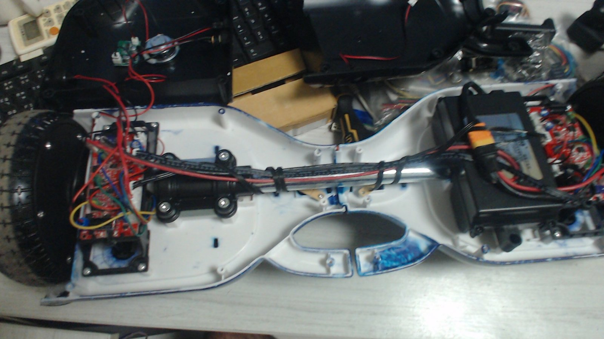
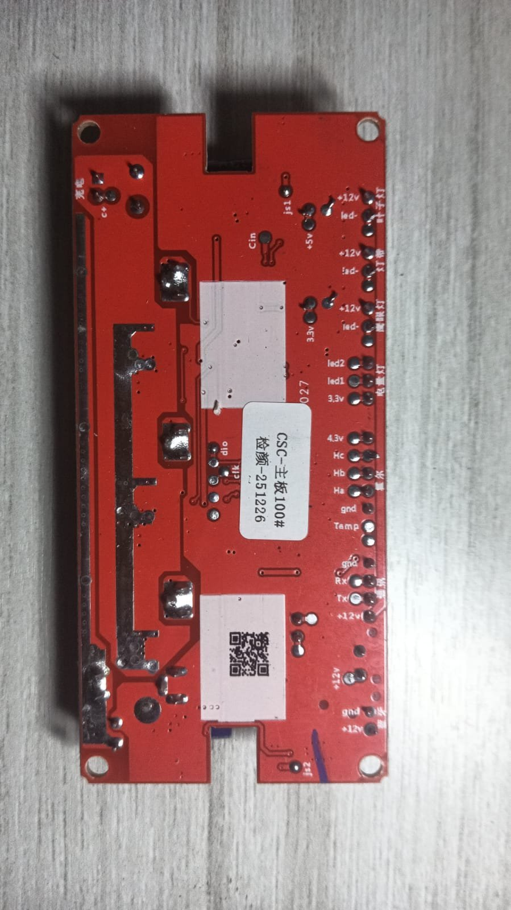
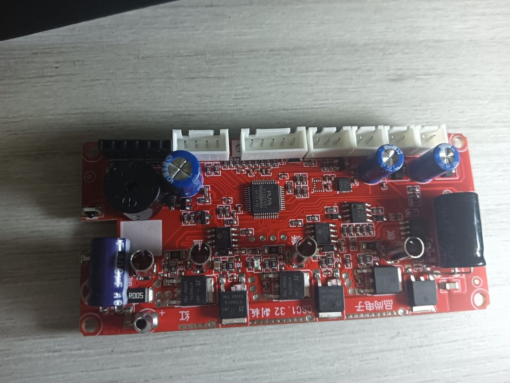
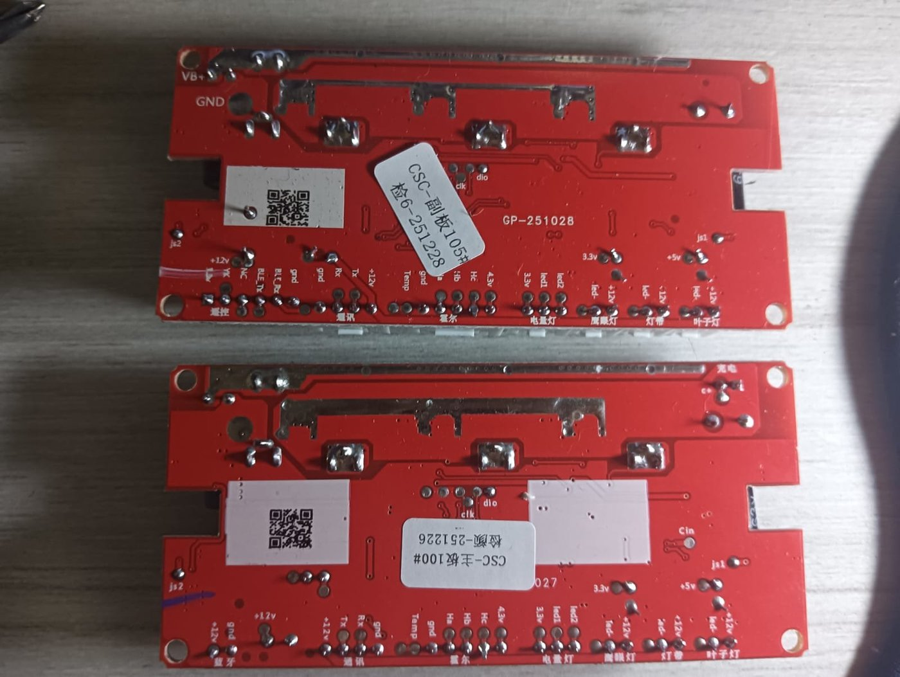

A ThinkNEO research project · Bangkok · 2026 · Vol. 01
Fofoca.
A domestic autonomous robot, built on commodity hardware and governed —
every action, every decision, every pixel — by the ThinkNEO AI
Control Plane.
Status
Phase 1 / 13
Method
Open development
Scope
Single household
Team
One, nightly
About the project
Not a product. A research vehicle.
Fofoca is Portuguese for friendly gossip — talk that observes,
connects, and occasionally makes trouble. The robot shares the name
on purpose. It is designed to watch, learn, and quietly report on the
rhythms of a household — never to surveil.
Every robot that exists in 2026 is either a consumer puck with fixed
behavior or a six-figure research platform. FOFOCA is a deliberate
third path: a fully capable household robot built from off-the-shelf
parts, developed in the open, governed end-to-end by enterprise-grade
AI infrastructure. If the ThinkNEO Control Plane can govern this,
governing a CRM is trivial.
Can a solo founder build a credible autonomous robot using only commodity hardware and open-source software in 2026?
Can enterprise AI governance patterns apply meaningfully to a physical agent in a private home?
Can the resulting platform become a reference implementation for enterprise buyers evaluating the ThinkNEO Control Plane?
Current state
What today looks like.
Phase 1 / 13 · Mechanical base · Updated April 21, 2026
Hardware acquired. Mainboard identified. Manufacturer contacted. Firmware port blocked on two shipments.
DoneHoverboard disassembled, Puya PY32F031 mainboard identified and documented
DoneSilkscreen pinout extracted — UART, Hall sensors, SWD header all mapped
DoneFormal outreach sent to Pinshang Electronics (品尚电子) for datasheet + schematic
WaitingST-Link V2 programmer shipping from Lazada TH
WaitingManufacturer reply — expected within 3–7 days via our Guangzhou contact
NextOriginal firmware backup via SWD, then port begins
Dispatch from the bench
The part number that nobody supports.

21 APR · 01:04 BKK
The whole thing, opened for the first time. Two mainboards, one per
motor — not a single mainboard plus sideboards as most published
firmware-hack projects assume.
This is what hardware looks like when you do not yet know what is
inside it. The answer, we would find out over the next ninety
minutes, is a chip that no public firmware project has ever
targeted.

§ Board
One of the twin boards, isolated. Silkscreen reads CSC1.37 主板
— "mainboard" in Chinese — dated December 2025. The 48-pin square at center is the brain.

§ MCU
Close. Laser-etched on the die: PY32F031. Puya Semiconductor,
Shenzhen. Cortex-M0+ at 48 MHz. The part number that no public
firmware project yet supports.

§ Gift
Reverse side. Test points labeled in plain text: Rx, Tx, Ha, Hb,
Hc, 3.3v, Temp. A documentation gift from an OEM that did not
have to be this kind.
How it is built
Three tiers. One control plane.
FOFOCA runs on a deliberately unremarkable hardware stack — a hoverboard
chassis, a Raspberry Pi 5, and a decade-old Dell rack server. What makes
the system interesting is not the machinery. It is that every tool call,
every model invocation, every data write across all three tiers is
inspected, logged, and — where appropriate — blocked or rate-limited by
the ThinkNEO Control Plane. The same platform that governs enterprise
deployments, governing a physical agent in someone's living room.
Mechanical
Chassis6.5" hoverboard
Motors2× 250 W BLDC
MCUPuya PY32F031
Battery36 V / 10S2P
Arm6-DoF servos
VisionInsta360
Edge (Pi 5)
OSUbuntu 24.04
MiddlewareROS 2 Jazzy
PerceptionOpenCV + tflite
Motionfofoca-motion
BusMQTT (mosquitto)
Safetylocal-first
Server (R210)
Vector memoryChromaDB
RelationalPostgreSQL
Object storageMinIO
APIsFastAPI
DashboardsGrafana
Frontier LLMNVIDIA NIM
Roadmap
Thirteen phases. Each one demonstrable.
No phase is "research." If it cannot be demonstrated — on real hardware,
in a real home, with a real person watching — it is not done. Dates are
not published. When a phase lands, it lands in the commit log.
01
Mechanical base
Hoverboard drives via UART command from a laptop
02
Server stack
docker compose up brings all services; Grafana shows heartbeats
03
Edge bringup
Pi 5 publishes sensor telemetry to the MQTT bus
04
Motion protocol
Pi 5 commands motors; closed-loop odometry via Hall sensors
05
Teleop
Phone or browser can drive FOFOCA around a room
06
Dead reckoning
FOFOCA reports its position and heading continuously
07
Visual SLAM
Live floor plan updates as FOFOCA roams
08
Autonomous navigation
"Go to the kitchen" executes without human input
09
Perception
Person, dog, and object detection at usable frame rates
10
Face recognition
Household members recognized with local, opt-in enrollment
11
Dog monitoring
Daily dog-activity report generated and delivered
12
Routine learning
FOFOCA adapts its own schedule to household patterns
FOFOCA is a ThinkNEO project. ThinkNEO operates with three active
institutional partnerships — one at each layer of the stack: hardware,
frontier model, and academic research. This is not yet common for a
company of our size.
Hardware · Inference
NVIDIA Inception
Accepted partner program — hardware, NIM inference, and the broader startup ecosystem. Nemotron models power FOFOCA's higher-order cognition.
Frontier Model
Anthropic Partner Network
Claude is a first-class model in the ThinkNEO Control Plane. Partnership covers joint customer enablement and integration patterns.
Academic Research
USP · ICMC
Active collaboration with the Agents4Gov research group at Universidade de São Paulo on AI governance methodology and evaluation.